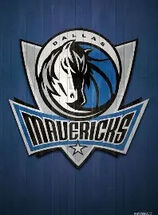

达拉斯独行侠队
2023 年至今的落脚点
小牛改名独行侠
曾译作“达拉斯小牛队”，是一支位于美国得克萨斯州达拉斯的职业篮球队，现征战 NBA，属西部联盟西南赛区，主场为美国航线中心体育馆（American Airlines Center）。
球队 1980 年正式进入 NBA，队史第一座也是唯一一座总冠军来自 2010-11 赛季；2018 年，中文译名由“小牛”改为“独行侠”。
主场 2001 年建成启用，可容纳 19200 人。2001-02 赛季球队搬入新馆，当季即取得 57 胜，刷新队史纪录。2024 年 6 月，独行侠时隔十三年重返总决赛，以 1-4 负于波士顿凯尔特人，无缘队史第二座总冠军。

达拉斯独行侠队徽。
球队概况
| 加入 NBA | 1980 年 |
| 联盟 / 分区 | 西部联盟 · 西南赛区 |
| 主场 | 美国航线中心体育馆 |
| 总冠军 | 1 次（2011 年） |
| 中文译名 | 2018 年由“小牛”改为“独行侠” |
队史节点
| 时间 | 事件 |
|---|---|
| 1980 | 达拉斯独行侠队正式进入 NBA 联盟 |
| 1981-82 | 在首轮第一顺位选择了队史第一位状元马克·阿奎尔 |
| 1983-84 | 常规赛位列西部第四，队史首次进入季后赛 |
| 1987-88 | 取得 53 胜 29 负，季后赛首次闯入西部决赛，3-4 负于卫冕冠军洛杉矶湖人 |
| 1998 | 选秀大会上换来德克·诺维茨基，并从太阳队交易得到史蒂夫·纳什 |
| 2002-03 | 再次杀入西部决赛，被当年总冠军圣安东尼奥马刺淘汰 |
| 2005-06 | 首次打入 NBA 总决赛，被迈阿密热火逆转 |
| 2010-11 | 以 4-2 战胜迈阿密热火，获得队史第一座 NBA 总冠军奖杯 |
| 2018 | 中文译名由“达拉斯小牛”更改为“达拉斯独行侠” |
与欧文的交集
2023 年 2 月，欧文被交易至达拉斯独行侠队。2025 年 3 月，他遭遇左膝前十字韧带撕裂，赛季提前报销；同年 7 月，球队官宣与欧文正式完成续约。